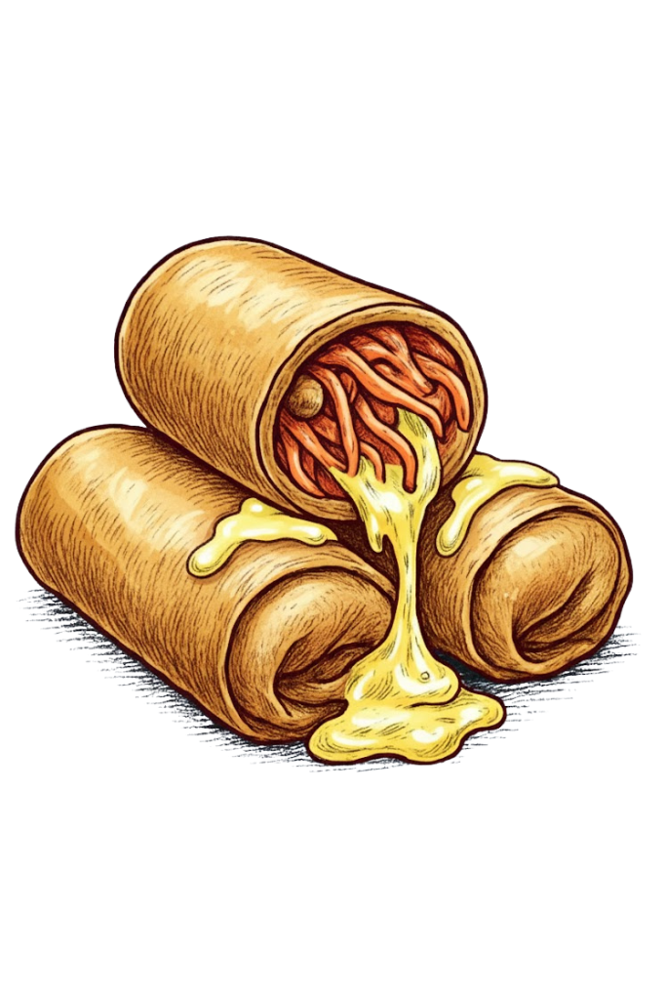

CHEESY LUMPIANG
TOGE
BEHIND THE
FLAVOR
Cheesy Lumpiang Toge is a playful twist on the classic Filipino favorite, blending the crispiness of traditional lumpia with the rich, gooey goodness of melted cheese. The fresh mung bean sprouts and vegetables provide a light crunch, while the cheese adds a creamy, indulgent layer of flavor. This combination creates a perfect balance of texture and taste—crispy on the outside, melty on the inside—making each bite a fun and satisfying experience. It’s a modern take that keeps the spirit of street-food nostalgia while adding a decadent, cheesy surprise.

“Crispy outside, gooey inside — Cheesy Lumpiang Toge brings the ultimate melty crunch attack!”
INGREDIENTS
- 2 cups toge (mung bean sprouts)
- 1 small carrot, julienned
- 1 small onion, sliced
- 3 cloves garlic, minced
- 1 tbsp soy sauce
- ½ cup grated cheese (cheddar or mozzarella)
- Salt & pepper to taste
- Spring roll wrappers
- Oil for frying
PROCEDURE

1. Sauté garlic, onion, and siling labuyo until fragrant.
2. Add the carrots and cook for 1–2 minutes.
3. Add the toge, soy sauce, salt, and pepper.
Mix and cook briefly.
4. Turn off heat and let the filling cool.
5. Stir in the grated cheese until evenly mixed.
6. Spoon the mixture onto wrappers and roll into lumpia.
7. Heat a little oil and fry until golden and crispy
(or bake/air-fry for a lighter version).
8. erve warm, optionally with a light vinegar or calamansi dip.